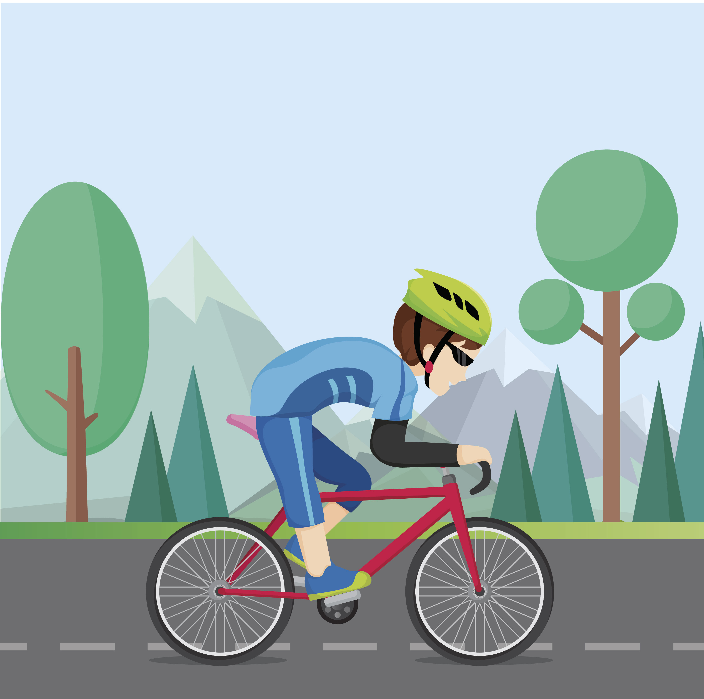
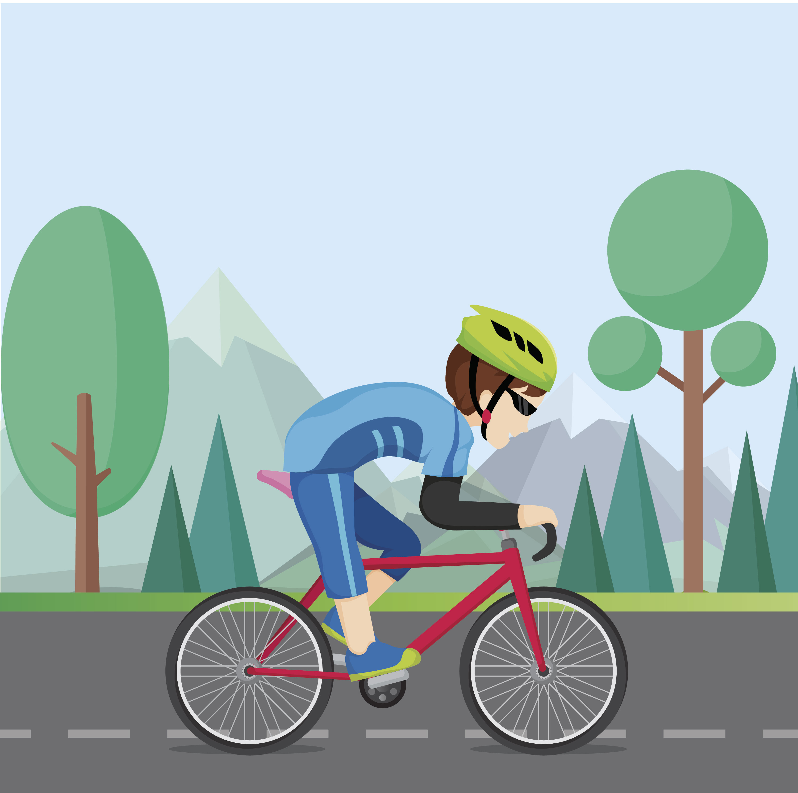
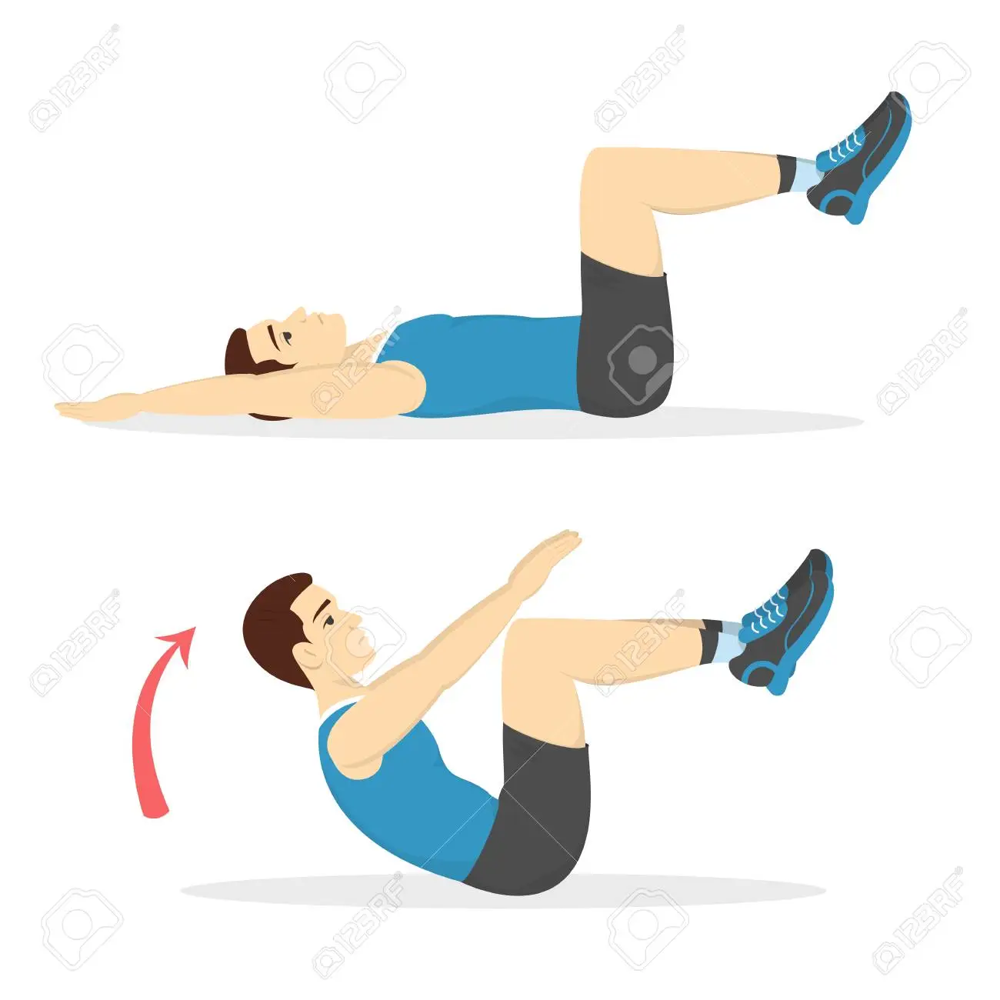
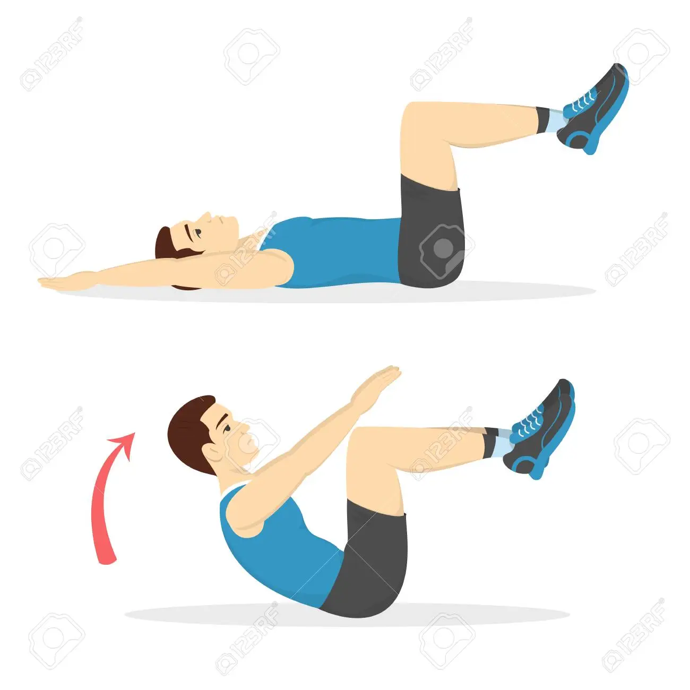
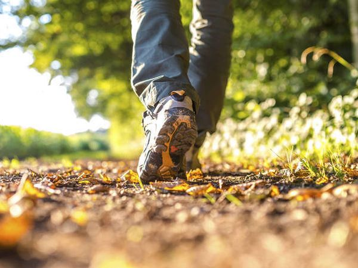
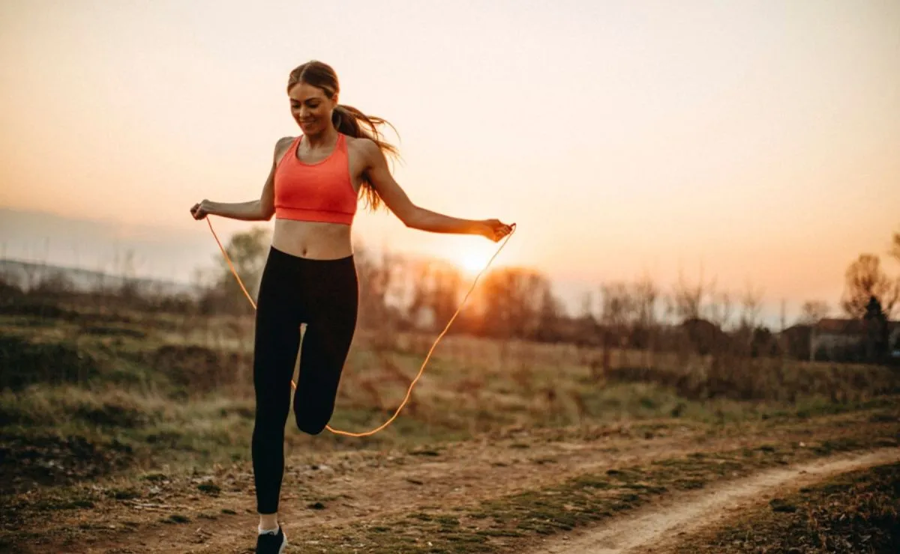
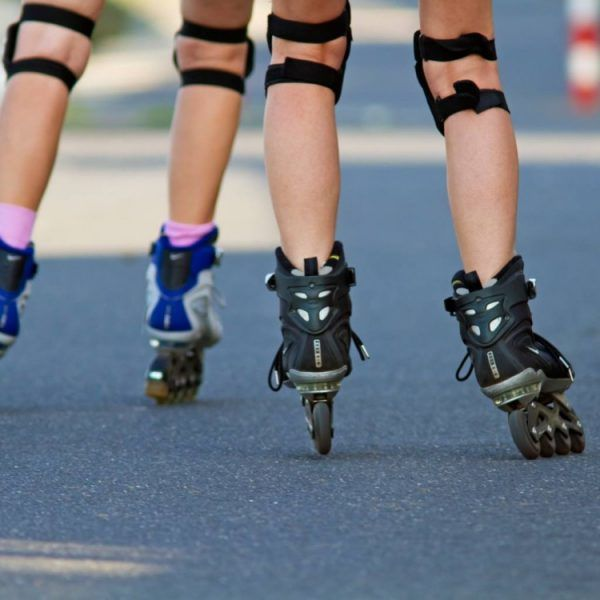
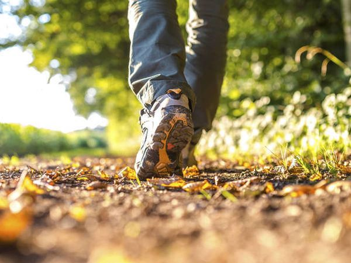
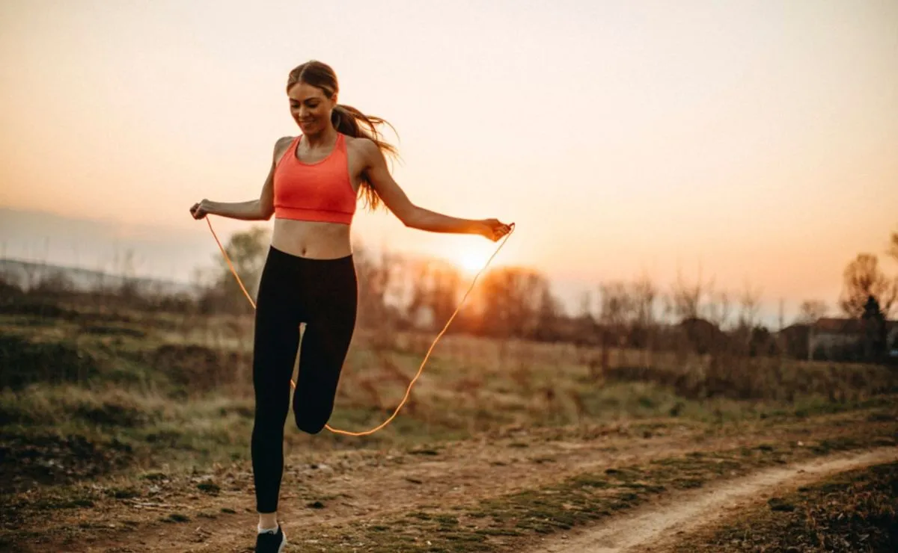
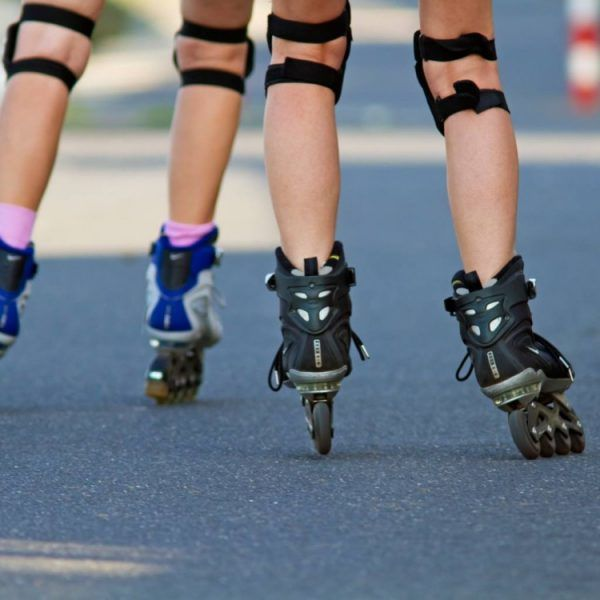

Beneficios de la actividad fisica
 


 

 






El yoga es una práctica que conecta el cuerpo, la respiración y la mente. Esta práctica utiliza posturas físicas, ejercicios de respiración y meditación para mejorar la salud general. El yoga se desarrolló como una práctica espiritual hace miles de años. Hoy en día la mayoría de las personas en occidente hace yoga como ejercicio y para reducir el estrés.
- Reducir su presión arterial y su frecuencia cardíaca
- Ayudarle a relajarse
- Mejorar su confianza en usted mismo
- Mejorar su coordinación
- Reducir el estrés
- Mejorar su concentración
- Ayudarle a dormir mejor
- Ayudar a la digestión
Montar en bicicleta tiene muchos beneficios para tu salud, por ejemplo, a nivel cardiovascular, circulatorio y respiratorio. Además, tonifica las piernas y reduce la celulitis. Pedalear durante una hora, nos hace quemar unas 500 calorías aproximadamente y mejora nuestra capacidad aeróbica
- Oxigena el cerebro y combate el estrés
- Tonifica y fortalece la espalda
- Corazón fuerte
- Sistema inmunológico resistente
- Corazón fuerte
- Adiós a la celulitis
Realizar cualquier tipo de actividad física o practicar determinado deporte con regularidad es bueno para la salud, por lo que muchas personas aprovechan los múltiples beneficios de correr para mantenerse en forma, ya que es fácil, práctico y simple.
- Lo puede hacer cualquier persona.
- Es práctico.
- Mantiene el cuerpo en forma.
- Disminuye el riesgo de ciertas enfermedades
- Ayuda a mantener la línea
- Se generan endorfinas
Pocos ejercicios son tan completos y divertidos como la natación. No solo combina el desarrollo físico con el mental, sino que también se adapta a los distintos niveles de forma y edades. Además, la natación es un aprendizaje indispensable para los niños, porque contribuye al desarrollo de su independencia y autoconfianza. Y es una herramienta de vida muy útil en caso de necesidad.
- Oxigena el cerebro y combate el estrés
- Tonifica y fortalece la espalda
- Corazón fuerte
- Sistema inmunológico resistente
- Corazón fuerte
- Adiós a la celulitis
Montar en bicicleta tiene muchos beneficios para tu salud, por ejemplo, a nivel cardiovascular, circulatorio y respiratorio. Además, tonifica las piernas y reduce la celulitis. Pedalear durante una hora, nos hace quemar unas 500 calorías aproximadamente y mejora nuestra capacidad aeróbica
- Oxigena el cerebro y combate el estrés
- Tonifica y fortalece la espalda
- Corazón fuerte
- Sistema inmunológico resistente
- Corazón fuerte
- Adiós a la celulitis
Los abdominales son uno de los ejercicios físicos por excelencia. Junto con las carreras y las flexiones, los abdominales han formado parte de casi cualquier rutina de entrenamiento. Pero, ¿te has preguntado alguna vez cuáles son los beneficios de hacer abdominales?, ¿Sabes con qué objetivo te machacas subiendo y bajando el tronco hasta sudar?
- Respira mejor gracias a los abdominales
- Protegen nuestros órganos
- Los abdominales, claves para el equilibrio
- Acaba con los dolores de espalda
El baile combina los beneficios del ejercicio aeróbico con los del ejercicio de soporte de peso. Al bailar, usted puede obtener muchos beneficios de salud mental y física, lo que incluye
- Mejor salud
- Músculos más fuertes
- Mejor equilibrio y coordinación
- Huesos más fuertes
- Menor riesgo de demencia
- Mejor memoria
- Menos estrés
- Más energía
- Mejor estado de ánimo
Todo el mundo intuye que caminar es bueno para la salud, pero cuando leas estos 16 beneficios de caminar, quedarás perplejo de lo importante para tu vida que puede llegar a ser hacer un poco de ejercicio diario. Así que coge tus zapatillas y ¡¡¡a caminar!!!
- Disminuye el riesgo de ser hipertenso.
- Produce efectos favorables sobre el colesterol.
- Puede ayudar a prevenir la aparición de diabetes.
- Puede mejorar tu vida sexual.
- Aumenta los niveles de Vitamina D.
- Ayuda a perder peso.
Un minuto saltando la cuerda al día no sólo te brindará beneficios para la salud, sino que también te hará trabajar la mayoría de los músculos, te ayudará a mejorar tu balance y coordinación y te permitirá aumentar tu resistencia cardiovascular.
- Quema calorías
- Mejora la resistencia
- Fortalece el corazón.
- Involucra a gran cantidad de músculos.
- Es para todo el mundo.
- Es divertido.
El Canotaje es un deporte acuático que requiere de una embarcación, en la que una, dos o tres personas reman de manera individual o en quipo. Existen dos modalidades de embarcaciones de competición en aguas quietas: el kayak y la canoa.
- Aumentar la flexibilidad
- Elimina el estrés o las tensiones.
- Fortalecer los músculos de los brazos, la espalda y el tronco.
- Incrementar la coordinación motriz fina (necesaria para realizar actividades que requieren precisión) y gruesa (movimientos que involucran varios grupos musculares).
- Te divierte
El patinaje es un deporte que se practica deslizándose sobre el suelo encima de unos patines. Existen dos modalidades: en línea o sobre hielo. En línea cuando nos desplazamos sobre el suelo usando unos patines con ruedas y sobre hielo cuando el desplazamiento se realiza mediante una cuchilla sobre una pista de hielo. En ambos casos, puede dar lugar a otros deportes. Como por ejemplo el hockey.
- Mejora el tono muscular de las piernas
- Quema gran cantidad de calorías
- Mejora el equilibrio
- Fortalece el corazón y los pulmones
- Tiene un menor impacto en las articulaciones que correr
- Mejora la coordinación motriz
Sirven para trabajar directamente los músculos de las caderas, glúteos y muslos, y fortalecer los huesos, ligamentos y tendones. Además, las sentadillas son uno de los tres movimientos que integran el levantamiento de potencia y son excelentes para el desarrollo y tonificación de las piernas.
- Aumenta la fuerza
- Piernas y glúteos más definidos
- Mejora la movilidad
- Estabiliza tu cuerpo
- Útil para tu espalda
El Método Pilates o simplemente pilates es un deporte en el que se trabajan el cuerpo y la mente, y cuyos objetivos principales son reforzar la musculatura (desde la más profunda a la más superficial), aumentar la fuerza y la flexibilidad del cuerpo y mejorar la capacidad de concentración.
- Aumenta la flexibilidad, la agilidad y la coordinación de los movimientos.
- Corrige hábitos posturales perjudiciales y reduce los dolores de espalda.
- Aporta vitalidad y fuerza.
- Es útil para conocer mejor el propio cuerpo.
- Previene de lesiones musculares y ayuda en procesos de rehabilitación.
- Combate el estrés y la ansiedad a través del control de la respiración y de la concentración.
| # | Autores | Legajo | Grupo |
|---|---|---|---|
| 1 | Rubilar Francisco | Fai-2426 | Amarillo |
| 2 | Romero Pablo | Fai-1652 | Amarillo |